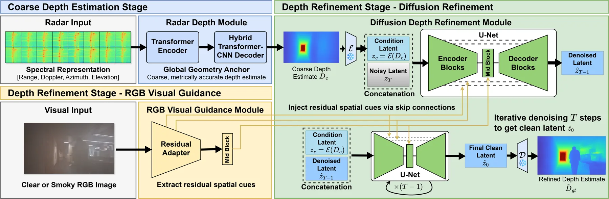
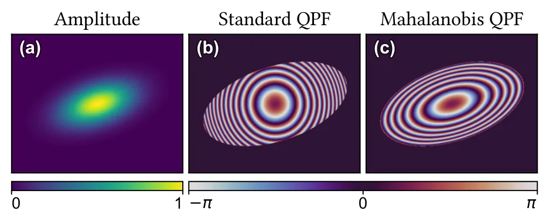
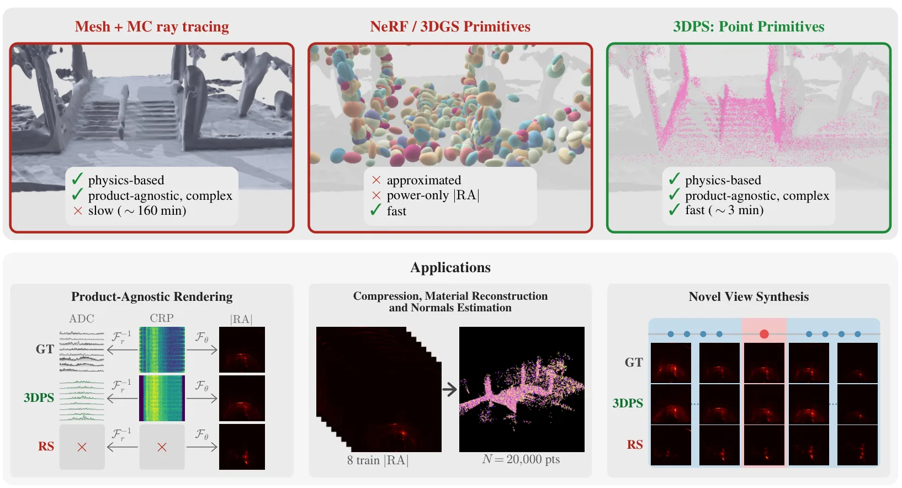
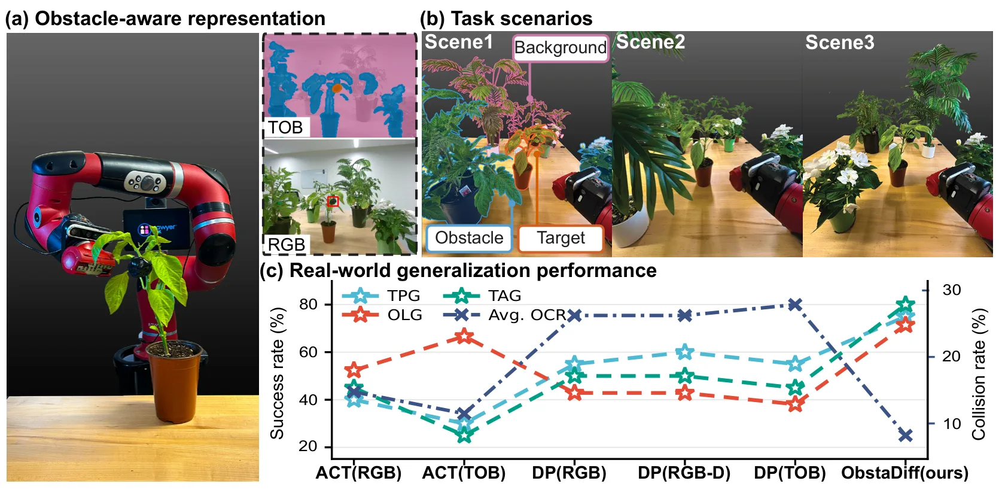

新论文 · 日期 2026-09-11 · score 12 · S层 · Geometry Foundation Models / 3D Foundation Models · cs.CV, cs.RO
内容级别：完整单篇海报
作者：Bin Zhao, Patrick Chiou, Nakul Garg
评分 12/10
几何基础模型雷达深度生成式先验退化视觉可靠感知
一句话工作总结：这是一条从可穿透退化环境的雷达几何量测到高密度深度的可靠感知链路。对状态估计的直接启发是把生成式细节恢复限制在 metric radar depth 的条件下，并把视觉退化和深度置信度作为后端权重，而不是让生成模型无约束地决定尺度。
GRADE 将单帧 4D mmWave 雷达谱映射为粗粒度 metric depth，再用 latent diffusion 在每一步去噪中恢复结构细节；可用时加入残差 RGB cues，并在能见度下降时趋向雷达条件路径。作者在约 95K 帧、12 座建筑的清晰、烟雾退化和遮挡数据上报告 clear MAE 0.303 m、smoke MAE 0.313 m。
Dense 3D depth perception fails under smoke, fog, and darkness because optical sensors cannot penetrate airborne particulates. mmWave radar remains usable and measures range accurately under these conditions,…

新论文 · 日期 2026-09-11 · score 11 · A层 · Robotic Foundation Models / VLA · cs.RO, cs.CV, cs.LG
内容级别：半海报（待补全）
作者：Jinho Jeong, Se June Joo, Jaehyun Kang, Dongyun Kim, Yena Kim, Hanjung Kim, Seon Joo Kim
评分 11/10
VLA机器人化视频具身学习OOD 鲁棒性动作对齐
一句话工作总结：HuRo 把人类视频规模优势转化为 VLA 可用的机器人对齐监督，并用真实任务和 OOD 扰动验证规模效应。对空间智能路线而言，它提供了一个可拆分的‘视频表征—动作重定向—闭环策略’桥梁，但还需要显式接入状态不确定性与地图记忆。
HuRo 构建 robotization pipeline，将人类视频转换为机器人对齐的观测与动作轨迹，并从五个视频来源形成约 630K robotized episodes、142M processed frames。四项真实操作任务中，扩大机器人化预训练使 overall completion 从 51.5% 提升至 80.3%，空间和视觉分布外 completion 从 34.9% 提升至 72.2%。
Human video datasets have emerged as a compelling alternative to expensive real-robot data, offering rich diversity at scale. To bridge the human-to-robot embodiment gap, existing approaches either robotize vi…

新论文 · 日期 2026-09-11 · score 9 · A层 · Robotic Foundation Models / VLA · cs.RO, cs.CV
内容级别：半海报
作者：Kian Hosseinkhani (Simon Fraser University), Qinhe Peng (University of Pennsylvania), George Shramko (Simon Fraser University), Mehran Aghabozorgi (Simon Fraser University), Jianing Qian (University of Pennsylvania), Tristan Engst (Simon Fraser University), Alireza Moazeni (Simon Fraser University), Dinesh Jayaraman (University of Pennsylvania), Ke Li (Simon Fraser University, Canada CIFAR AI Chair)
评分 9/10
VLA单步生成cIMLE实时控制动作多模态
一句话工作总结：该工作把 VLA 的动作采样瓶颈压缩为单步、多模态条件生成，直接改善实时闭环执行。它对可靠空间智能的价值在于给状态估计和动作策略留下更高频的交互预算，但必须补测观测延迟、状态不确定性和安全约束下的行为。
IMLE-VLA 用 conditional IMLE 单步生成器替代 diffusion/flow action head 的多步采样，以覆盖多模态动作并避免回归坍缩。接入 π0.5 后推理频率为 55 Hz 对 15 Hz，LIBERO 40-task 平均成功率 98.0%，真实 Franka 四项任务平均单回合推理时间降低 3.9×–6.6×。
Vision-language-action (VLA) policies leverage pretrained vision-language backbones to achieve strong cross-task generalization. A leading design couples this backbone with a dedicated continuous action head t…

新论文 · 日期 2026-09-11 · score 15 · B层 · Neural Rendering / 3DGS / NeRF · cs.GR, cs.CV, cs.LG
内容级别：简报式摘要
作者：Haolong Wang, Yicheng Zhan, Kaan Ak\c{s}it, Simeng Qiu
评分 15/10
Gaussian splatting全息表示波前
一句话工作总结：B级神经渲染观察，关注波前表示而非空间状态估计。
CVQPG 用二维二次相位函数替代标准 2D Gaussian primitives，并学习波前曲率；等参数量评测中 RGB 与灰度全息重建平均提升 0.19 dB 和 0.33 dB。
We introduce Complex-Valued Quadratic Phase Gaussian (CVQPG), a novel hologram representation method that replaces standard 2D Gaussian representations used in 2D Gaussian Splatting with 2D quadratic phase fun…

新论文 · 日期 2026-09-11 · score 11 · B层 · Neural Rendering / 3DGS / NeRF · cs.CV, cs.GR, cs.LG, eess.SP
内容级别：简报式摘要
作者：Adnan Armouti, Yixuan Gao, Rajalakshmi Nandakumar
评分 11/10
雷达渲染点 splatting复杂值表示
一句话工作总结：B级神经渲染观察：复杂值雷达表示可能成为跨视角雷达几何建模的基础，但尚未证明位姿估计收益。
3DPS 从标准雷达方程出发，为定向 3D 点赋予材料模型，并将复杂 phasor splat 到 range bins；在 6 个 ColoRadar 室外场景 held-out RA images 上达到平均 Pearson correlation 0.587，单 RTX 4090 每场景约 3 分钟。
Solving novel view synthesis (NVS) for millimeter-wave (mmWave) radar requires a renderer that is physically faithful, complex-valued, and multi-viewpoint-tractable. No prior method achieves these three proper…

新论文 · 日期 2026-09-11 · score 4 · cs.RO, cs.LG
内容级别：简报式摘要
作者：Jiawen Wang, Kevin Yao, Khalid Jawed
评分 4/10
障碍感知扩散策略真实机器人
一句话工作总结：A-级实时具身控制观察，重点是把障碍物结构显式注入策略。
ObstaDiff 用轻量 obstacle-aware encoder 将目标、障碍物和背景结构化，再由分解式 diffusion policy 生成目标中心轨迹。366 次真实温室执行中，平均任务成功率 75.41%、平均障碍碰撞率 8.20%。
Imitation learning has achieved impressive results in robotic manipulation, yet most existing approaches assume clean backgrounds and lack explicit mechanisms for obstacle-aware motion generation. Extending su…